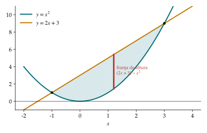

Para arrancarEl área entre dos curvas es «la de arriba menos la de abajo», integrada. Solo hay que saber quién está arriba… y no olvidar que pueden cambiar de turno.
La idea que guía todas las aplicaciones de la integral es la misma: dividir la cantidad buscada en muchas piezas pequeñas, aproximar cada pieza por algo sencillo, sumar y pasar al límite. El resultado es una integral. En la práctica se dibuja un «elemento representativo» y se escribe directamente su contribución.
Si las curvas se cruzan dentro del intervalo, el área es ∫ab∣f−g∣: hay que partir en los puntos de corte. Por ejemplo, el área entre senx y cosx en [0,2π] es ∫0π/4(cosx−senx)dx+∫π/4π/2(senx−cosx)dx=2(2−1).
InteractivoÁrea entre curvas
Agrega rectángulos; compara el área con la integral con signo.
11.2 Rebanadas horizontales
A veces es más cómodo integrar respecto a y: si g(y)≤f(y) para c≤y≤d, el área de la región entre x=g(y) (izquierda) y x=f(y) (derecha) es ∫cd(f(y)−g(y))dy: «derecha menos izquierda».
Es la región del Ejemplo 11.2 reflejada en y=x: ∫−12(y+2−y2)dy=29. Con rebanadas verticales habría que partir la región en dos, porque la frontera inferior cambia de fórmula en x=1.
11.3 Una mirada histórica: la cuadratura de la parábola
El área del segmento parabólico limitado por una parábola y una cuerda es 34 del área del triángulo inscrito que tiene la misma base y cuyo vértice es el punto donde la tangente es paralela a la cuerda.
Demostraciónmostrar
Basta verlo para y=x2 y la cuerda entre (a,a2) y (b,b2). El área del segmento es ∫ab((a+b)x−ab−x2)dx=6(b−a)3. La tangente paralela a la cuerda (pendiente a+b) toca en x=2a+b, y el triángulo con ese vértice tiene área 8(b−a)3 (por la fórmula del determinante). El cociente es 68=34.
Arquímedes llegó a este resultado hacia el 250 a. C. sin integrales: llenó el segmento con infinitos triángulos y sumó la serie geométrica 1+41+161+⋯=34. Es, quizá, el primer cálculo de una integral de la historia.
Halla el área entre y=ex, su recta tangente en x=0 y la recta x=1.
Soluciónintenta primero
La tangente es y=1+x y ex≥1+x. A=∫01(ex−1−x)dx=e−1−1−21=e−25≈0,218.
🔎 Profundiza: un área entre una recta y una parábola
Hallemos el área encerrada por y=x2 y y=2x+3. Primero los cortes: x2=2x+3⇒(x−3)(x+1)=0, así x=−1 y x=3. En ese intervalo la recta está arriba (pruébalo con x=0: 3>0).

(2x+3)−x2." style="width:560px;max-width:100%" loading="lazy">Cada franja vertical tiene altura «arriba menos abajo»: (2x+3)−x2.
Dato curioso (Arquímedes): el área de un segmento parabólico es 34 del triángulo inscrito con los mismos extremos. Aquí ese triángulo tiene área 8 y, en efecto, 34⋅8=332.
Ojo, parcero: errores que veo en los parciales
restar en el orden equivocado → arriba − abajo (o derecha − izquierda)
no partir donde se cruzan → busca TODOS los cortes
✦Practica activa
Retos para afianzar las ideas del capítulo: arma la demostración con los bloques en el orden correcto y caza el paso falso de un argumento.
🧩 Ordena la soluciónÁrea entre curvas
Halla el área entre y=x y y=x2.
🔍 Encuentra el errorLas curvas se cruzan
Se calcula el área entre y=sinx y y=cosx en [0,π/2].
✎ Repaso del capítulo
Área entre y=x y y=x2
Se cortan en 0 y 1: ∫01(x−x2)dx=21−31=61≈0,1667.
Área entre y=x2 y y=4.
puedes escribir fracciones como 3/2
Se cortan en ±2: ∫−22(4−x2)dx=(4x−3x3)−22=332≈10,667.
Área entre y=x y y=x.
puedes escribir fracciones como 3/2
Se cortan en 0 y 1: ∫01(x−x)dx=32−21=61≈0,1667.
A veces conviene integrar respecto a y.
Si la región se describe mejor con x=g(y) (por ejemplo, para no partirla en pedazos), conviene integrar en y. Verdadero.